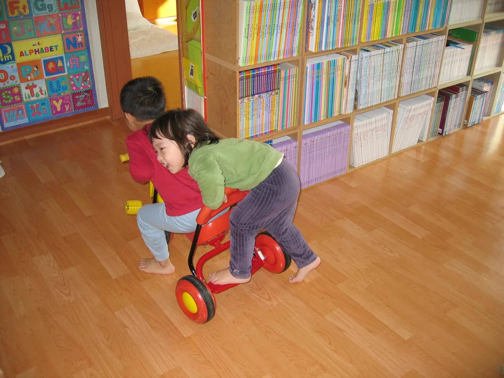

그때 우리는
참 작았다
사진 속에는 우리가 잊고 있던 하루들이 남아 있습니다.
가현·지용·영현의 어린 시절 타임캡슐
사진 50장추억 장면 5개예상 감상 시간 약 4분
오늘 도착한 옛날 사진
GAME
누군지 맞혀보세요
THEN & NOW

사진 속에는 우리가 잊고 있던 하루들이 남아 있습니다.
가현·지용·영현의 어린 시절 타임캡슐
GAME
THEN & NOW